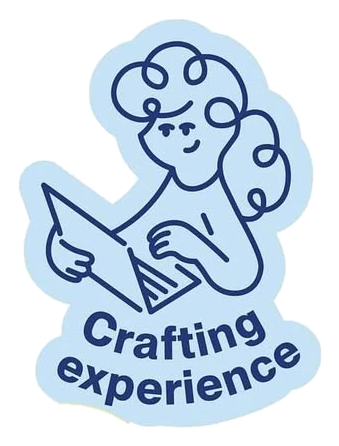

designers
of Tampere
Changes the greeting
Glad you found us. We host meetups, critiques and good company for anyone who designs anything.
Come say hi

Glad you found us. We host meetups, critiques and good company for anyone who designs anything.
Come say hi